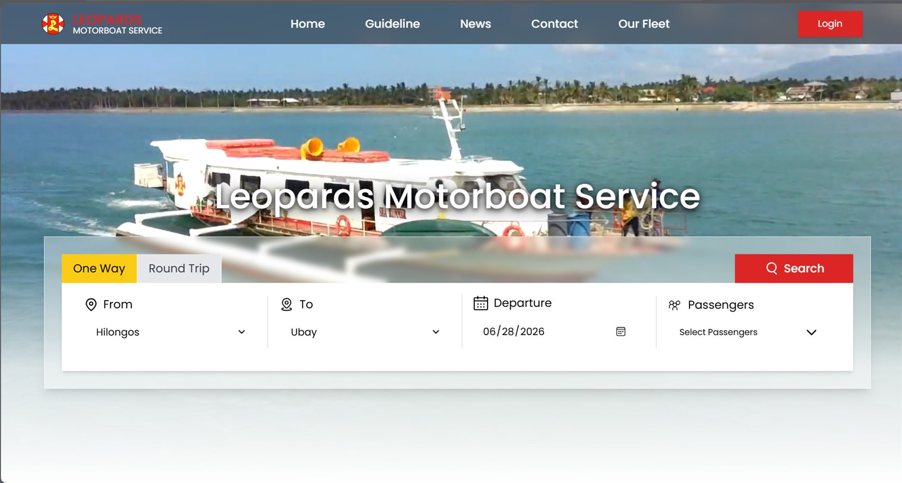

Booking platform
Leopards Motorboat Service
A passenger booking platform for the Hilongos–Ubay motorboat route. Travellers search one-way or round-trip sailings by departure date and passenger count, browse the fleet, and read guidelines and news updates — with bookings and accounts handled behind a login.
Visit the site ↗